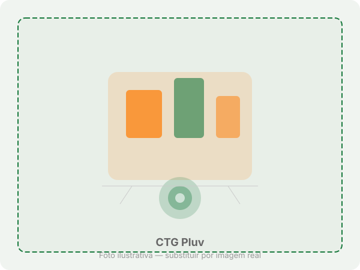
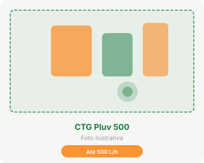
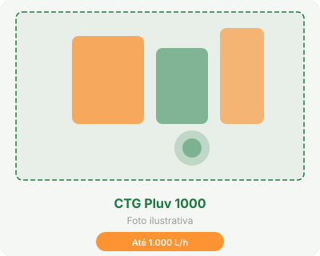
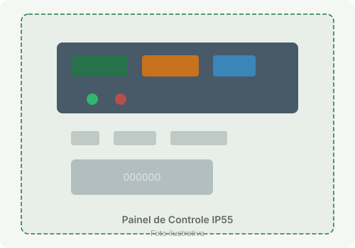
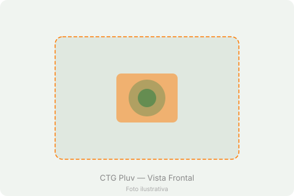
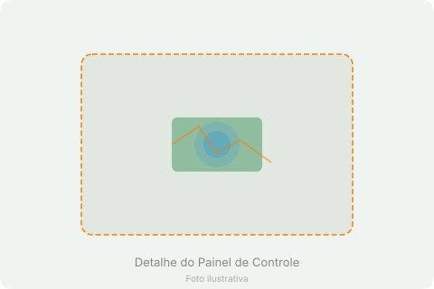
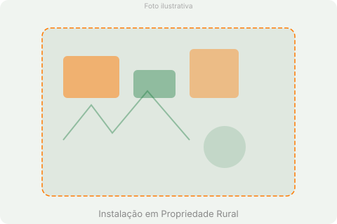
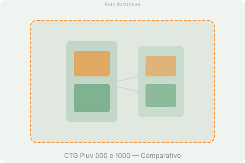

Produtividade e Economia: Transforme a Água da Chuva em Recurso Seguro para o seu Agronegócio
Conheça a Linha CTG Pluv (ETAC), com modelos de 500 e 1.000 litros/hora — a solução portátil que garante água tratada de alta qualidade para otimizar os processos na sua fazenda, agroindústria ou granja.
Falar com um EspecialistaInteligência Hídrica no Campo
A Linha CTG Pluv foi projetada para dar autonomia e segurança hídrica à sua operação rural
O sucesso no agronegócio depende da gestão eficiente de cada recurso. Depender exclusivamente de poços artesianos ou caminhões-pipa pode inflar os custos operacionais e colocar a produção em risco em períodos de estiagem.
A Linha CTG Pluv (ETAC) — Estações de Tratamento de Água da Chuva — da CTG Química foi desenvolvida para dar autonomia hídrica à sua propriedade. Ela atua como um sistema de polimento final portátil, purificando a água captada dos telhados de galpões e estruturas para que ela atenda rigorosamente às exigências físico-químicas e microbiológicas da legislação sanitária.
Mais segurança e economia porteira para dentro.

Aplicações Inteligentes na Propriedade Rural
Versatilidade para os desafios do dia a dia no campo
Lavagem de Frota e Maquinários
Água livre de areia e partículas pesadas para limpar tratores, colheitadeiras e implementos sem riscar ou danificar os componentes.
Higienização de Galpões e Granjas
Garanta a biosseguridade no manejo de animais utilizando água livre de vírus e bactérias na limpeza das instalações.
Preparação de Caldas e Pulverização
A filtragem por carvão ativado retira compostos orgânicos e toxinas da água, evitando reações indesejadas que possam reduzir a eficácia de defensivos agrícolas.
Sistemas de Resfriamento e Irrigação Localizada
Evite o entupimento de bicos e tubulações com um sistema que retém sólidos de até 25 micras.
Tecnologia de Ponta em 4 Etapas de Purificação
Como a Linha CTG Pluv garante a segurança que o campo precisa
Filtração por Quartzo
Retém terra, poeira e partículas sólidas superiores a 25 micras, comuns em captações de telhados rurais.
Adsorção por Carvão Ativado
Remove odores, gostos e compostos orgânicos, entregando uma água limpa e polida para uso seguro.
Esterilização UV-C
Destruição biológica sem uso de química agressiva. Elimina vírus e bactérias por contato instantâneo através da tecnologia UVTRAT.
Dosagem Automática de Cloro
Uma bomba de precisão mantém os reservatórios e tubulações protegidos contra a formação de algas e contaminações posteriores.
Por que escolher a Linha CTG Pluv?
Benefícios estratégicos para a gestão hídrica da sua propriedade
Economia Comprovada
Reduza em até 60% os custos com caminhão-pipa e poços artesianos. O investimento se paga rapidamente com a eliminação de despesas recorrentes com abastecimento externo.
Autonomia Hídrica
Água tratada de alta qualidade disponível na sua propriedade mesmo em períodos críticos de estiagem, reduzindo a dependência de fontes externas imprevisíveis.
Biosseguridade Garantida
Água livre de vírus, bactérias e contaminantes químicos. A esterilização UV-C associada à dosagem de cloro assegura conformidade com as normas sanitárias mais rigorosas.
Portabilidade e Robustez
Estrutura SKID em Aço Inox 304 com tubulação PPR fundida. Projetado para ser transportado e instalado em diferentes pontos da propriedade com facilidade.
Conheça os Modelos da Linha CTG Pluv
Escolha a capacidade ideal para a demanda da sua propriedade

CTG Pluv 500
Modelo de entrada da Linha CTG Pluv. Ideal para pequenas e médias propriedades, atende demandas moderadas de água tratada para lavagem de maquinários e higienização de instalações.

CTG Pluv 1000
Modelo de alta capacidade da Linha CTG Pluv. Recomendado para médias e grandes operações agroindustriais, com maior vazão para atender demandas intensivas em múltiplos pontos da propriedade.
* Ambos os modelos da Linha CTG Pluv contam com dosagem automática de cloro, painel de comando IP55 e tubulação em PPR fundido. Outras capacidades e configurações estarão disponíveis em breve.
Projetada para a Rotina do Produtor: Fácil de Operar e Manter
Equipamento robusto que não dá dor de cabeça — o tempo no campo é precioso
Painel Blindado IP55
Proteção total contra poeira do campo e umidade, garantindo funcionamento confiável em qualquer condição.
Alarme de Retrolavagem
Alarme sonoro e luminoso (Pressostato) que avisa exatamente a hora de fazer a retrolavagem do filtro de areia.
Contador Digital UV
Mostra na tela os dias de uso da lâmpada, garantindo que você programe a manutenção preventiva sem interromper sua operação.
Hidrômetro Integrado
Meça exatamente quantos litros de água tratada utilizou e calcule o retorno do seu investimento com precisão.
Especificações Gerais
Características comuns aos modelos da Linha CTG Pluv

Galeria de Fotos
Veja o CTG Pluv em detalhes




Reduza os custos fixos da sua propriedade e aumente sua autonomia hídrica
Fale com nossos engenheiros especialistas em agronegócio e descubra qual modelo da Linha CTG Pluv é o ideal para a demanda da sua fazenda ou agroindústria.
Solicitar Dimensionamento de Projeto no WhatsApp